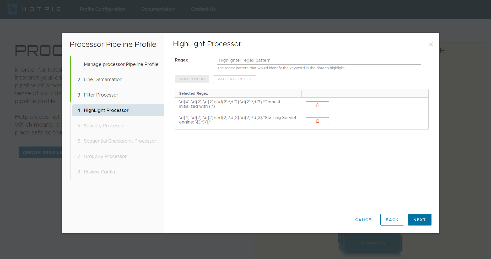

Attention!! Attention!!
Often in data, there are some key fundamental values/information that you would want to look at,
right away. To help you highlight and bring out this information, we bring to you, highlights.
Highlights searches the data units for the pattern you configure in the profile and then bring the
matches to you up front so you can check off those aspects of the data.
We use regex again to identify the aspects of the data units to highlight. Highlights is meant to
bring out a few key words or vital piece of information from the data.
We realize that there are often times where we would have to highlight more than one type of
keywords from the data units. You can therefore add as many highlights as you seem fit.
Sample Raw Data
Looking at the above data unit, we can assume that I would be interested in which port the server is running on and what version of the server is in play. So, to highlight those specific pieces of information, I would create two highlight processors and configure the appropriate regex there.
Sample Regex Pattern
The above regex patterns will highlight the below.
port(s): 8080 (http)
Apache Tomcat/9.0.29
Profile Configurations
